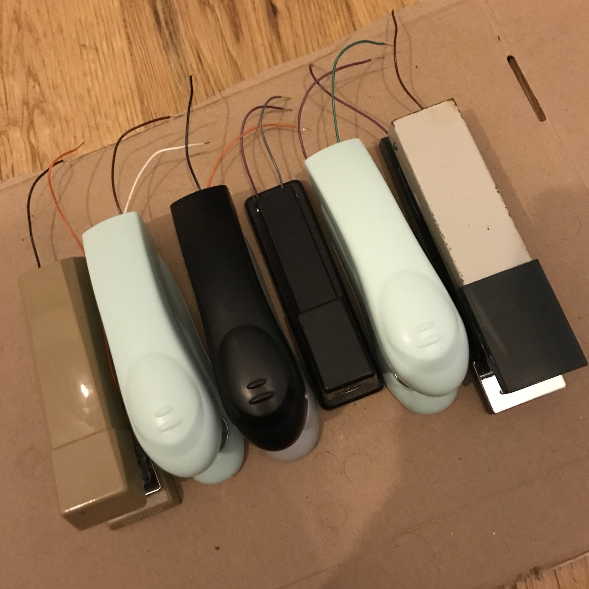
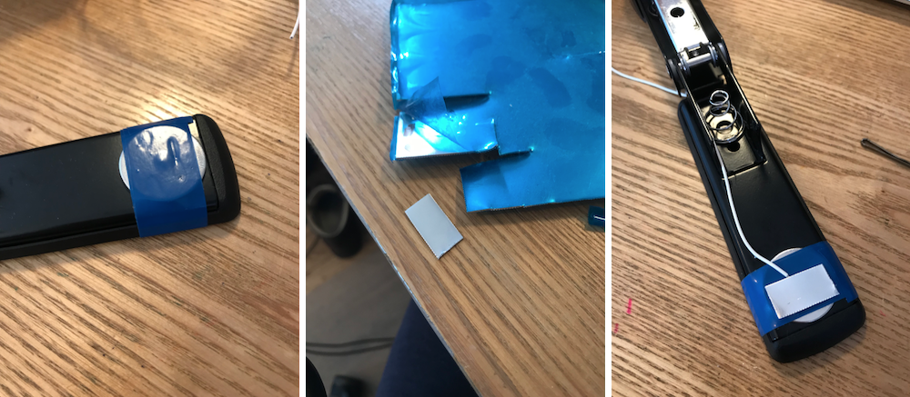
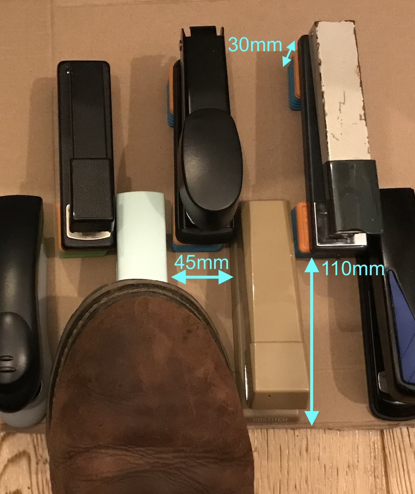
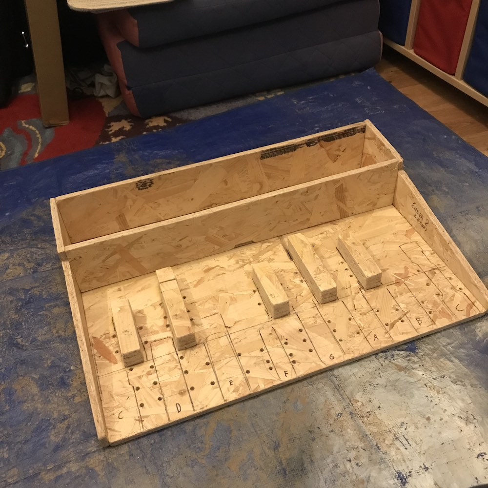
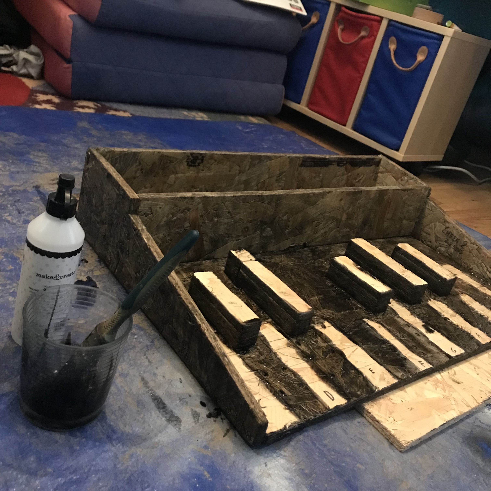
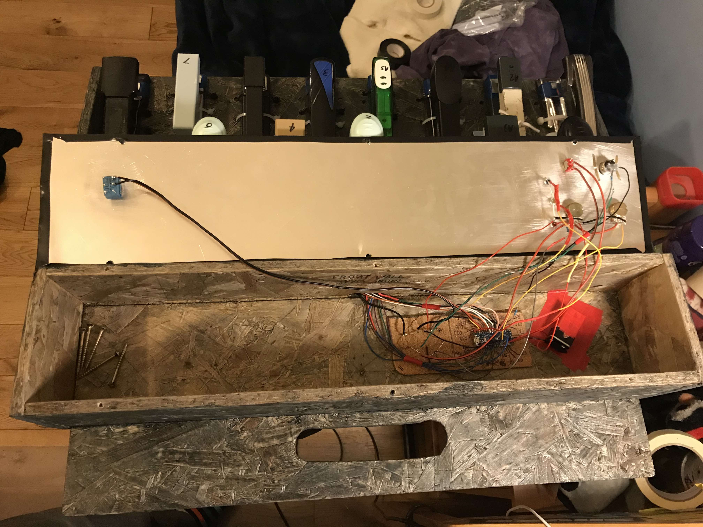
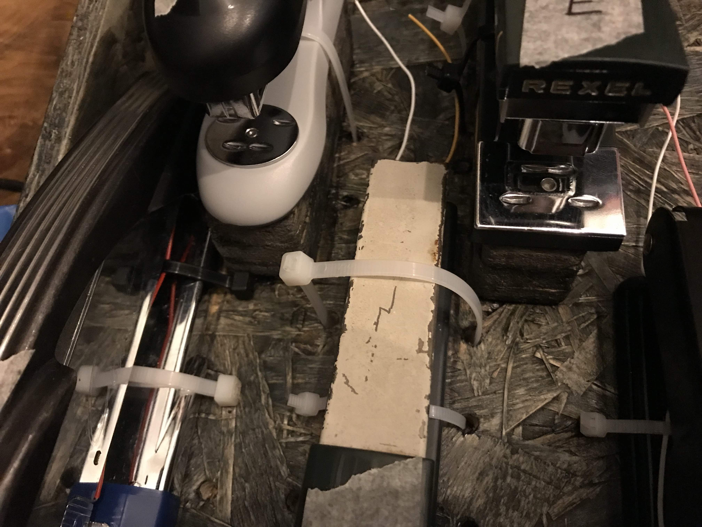
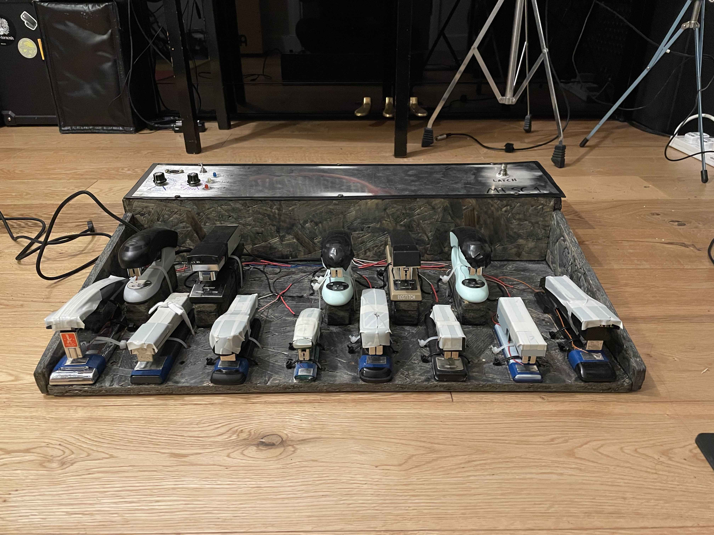

I recently (enough) MIDI-fied a set of organ foot pedals for a friend in a prog band, and in the interval between making the pedals and delivering them to him, I had a lot of fun using them myself, and decided to make myself a set. Unfortunately it turns out that organ foot pedals are quite expensive on their own- the only cheap way to get hold of a nice foot manual is to buy an entire electric home organ; they are sold for pennies by people who want them out of the house. Unfortunately I had nowhere to put one of these, and nothing to do with the rest of the organ once I'd taken out the foot pedals. I did however have a bag of staplers from my grandfather's workshop, which seem to work quite nicely as individual pedals in that they are well-built, rated for a good few cycles, and are of a decent size for foot operation. A somewhat silly idea then came to me.
Not much work was needed on the software side as the general idea was the same: the keyboard is thirteen digital-input switches, and the controls are a digital-in button (for the latching sustain function) and two analogue-in rotary potentiometers (for MIDI channel selection and octave selection). As before, numerous analogue inputs were read using the digitalIn() function to make them work as digital inputs, as the Arduino Zero I used didn't have enough.
The only changes made to the software (as far as I can remember - it's been a while between making the thing and writing this up) were changes to the debouncing delays, and improvements to the latching sustain to eliminate a bug which caused sustained notes to continue playing even when latching mode was turned off. This was a brute-force solution which involved sending note_off messages to the entire range of notes MIDI lets you, twice. This is very fast and doesn't have any impact so long as the MISC is the only MIDI device addressing a particular sound engine.
Staplers are nearly ready-made for this application, as discussed above. Many have thick and strong plastic bodies, with only the hammer and anvil made of metal. For these, the wiring process was as simple as attaching one wire to each; when the stapler is depressed, the two make contact and the switch is closed. For staplers with entirely metal bodies (or at least enough metal to permanently short out the two contacts), a layer of electrical tape was applied to one of the contact points (usually the anvil), and a small snippet of sheet aluminium secured on top, with a wire attached.
 Most of the wire was attached using superglue, tape or solder. I'm quite good at designing and assembling professional-looking hardware... for other people. I don't care about looks at all and I'm happy to fix anything that breaks, knowing the only one responsible is me. Hence anything I build for my own use looks absolutely dangerous, awful, breakable or all of the above.
An unexpected but interesting task was choosing which stapler to use for each key on the keyboard. The staplers are not uniform in size, shape or action- many came from my grandfather's workshop but others were found in charity shops, stationary stores, or in vulnerable locations. Faced with a disparate collection of objects, I had to pick a layout that was easy to navigate and made good sense to look at.
I eventually settled on having all the largest staplers on the outer edges of the keyboard so that I wouldn't bash into them while traversing between notes, and the smallest staplers as the white keys around the group of three black keys, so that the accidentals wouldn't need to be elevated too high to get them suitably clear of the naturals. Spacing was important too- measuring my shoes above the keys and giving a few centimetres of clearance ensured that accidentally pressing the wrong key was difficult enough to give me confidence taking my eyes off the board for a bit while playing.

Made of the cheapest chipboard I could buy, because funds are limited and the only way to justify a stapler foot manual is to go 'hey, at least it's cheaper than...'. I had the foresight to include a handle in the design, after noting that MOOP1 is difficult to pick up- this ended up being one of my favourite parts of the finished instrument. The whole thing is just about held together with wood glue and screws. No particular joinery to speak of- don't tell my DT teachers.
The cavity at the back of the instrument stores the same somewhat-dodgy electronics assembly as MOOP1, with all stapler wires entering through a little forward-facing hole. The space is oversized in case at some point I want to give this thing a MIDI-thru port, or its own synth engine. Instead of being bent metal as with MOOP1, this design is mostly (bad) wooden construction with a metal top. I liked the idea of going fully wooden, but I couldn't find any wood which was both strong enough to let me stand on it and thin enough for through-mounted electronic components.
In an attempt to prevent the chipboard from constantly flaking bits of woodchip everywhere, I painted it with several layers of a paint and PVA glue mixture. It seems to have mostly worked, although the resulting finish is pretty rough. I was torn between using a really nice woodstain (because staining and oiling chipboard seems like a funny contrast to me) and painting it black, but I reckon I'm constrained to the latter option now.
Wiring was nice and simple, following the MOOP1 wiring very closely. Yet again I had the opportunity to use rotary switches with different resistors, rather than rotary potentiometers, and yet again I chose the pots- they seemed to work well enough before, and continue to do so now.
The staplers are secured to the wooden enclosure by means of superglue and cable ties, passing over the staplers and through pre-drilled holes in the base. In defiance of what might be expected given the ramshackle construction of this device, the staplers have not budged or fallen out of place even once. They look bad, but that is OK with me.
The finished MISC1 has proven to be decently robust and playable, and doesn't look too bad considering the materials and methods with which it was made. Although MOOP1 looks much better from a purely aesthetic point of view, MISC1 is a good talking point and everyone who's seen it so far has been pretty amused. I really like it when finished tools and machines clearly show their history, so having the staplers which sat in my Grandfather's workshop so visible makes this a very personal instrument for me, and one which I really enjoy playing.
Unlike MOOP1, I've actually had the chance to use MISC1 was part of my keys setup. My main keyboard (Roland RD-88) doesn't take DIN MIDI as an input, but my synthesiser (Roland JD-Xi) does, and the architecture of the patches on the JD-Xi suits MOOP1 well. JD-Xi patches are stored in groups of four called a programme (the synth is multitimbral), with each patch accessible via a different MIDI channel. This means that revelant sounds are tied together in the system, so I can switch sounds for the synth and the pedals all at once.
The pedals are best used for long sustained notes, as it's difficult to travel quickly between the keys. In my Pink Floyd set, they are used during Shine on You Crazy Diamond for bass pad notes in the opening section, and in Sheep for the vocoder, and for the wonderful 'carelessly passing your time in the grassland awaaaaaaaaaaaaaaaayyyyyy' synth sound. They also get use for synth bass during Any Colour You Like, when one hand is busy playing a synth solo and the other is playing accompanying organ chords.
An interesting quirk of the Arduino running on batteries is that when the battery drains below a certain point, MISC1 (and I suspect MOOP1 too) starts firing random note_on messages, probably because the lowered voltage is messing with the threshold of what constitutes a button press. This also taught me that my synth has an 'enough is enough!' MIDI mode where it will stop accepting MIDI messages the sustained rate of transmission is high enough for long enough (much too high to be particularly musical- I reckon you could still send Zappa's Black Page without it freaking out). I've addressed this issue by plugging a micro USB into the Arduino and running it off of a USB wall wart. At the moment, the USB cable leaves the electronics enclosure through the same small hole the stapler wires use to reach the Arduino. I should really create a proper port on the device at some point...